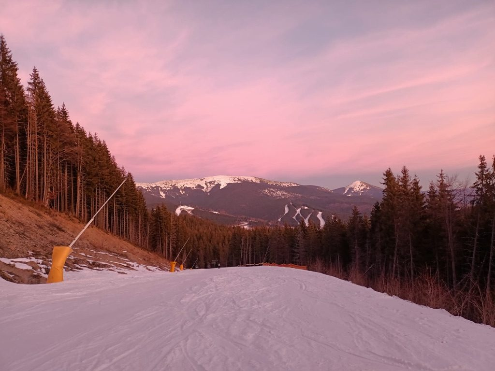
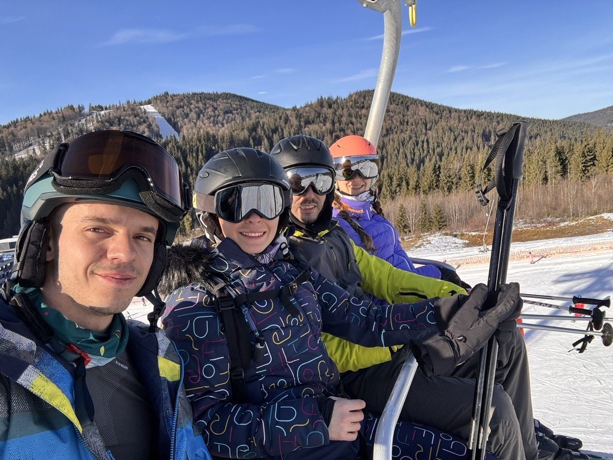
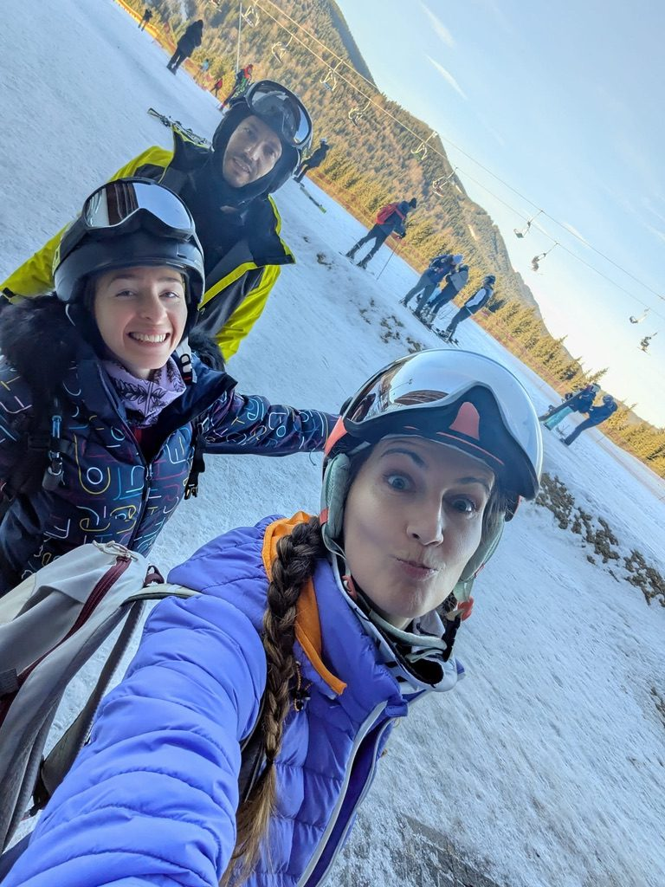
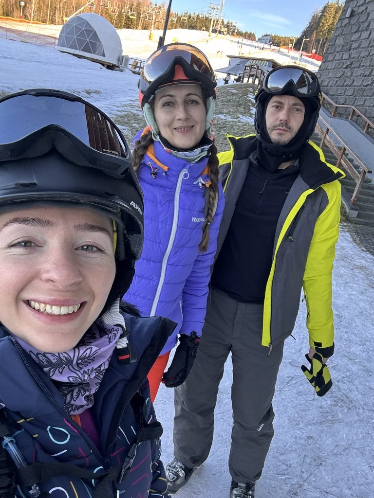
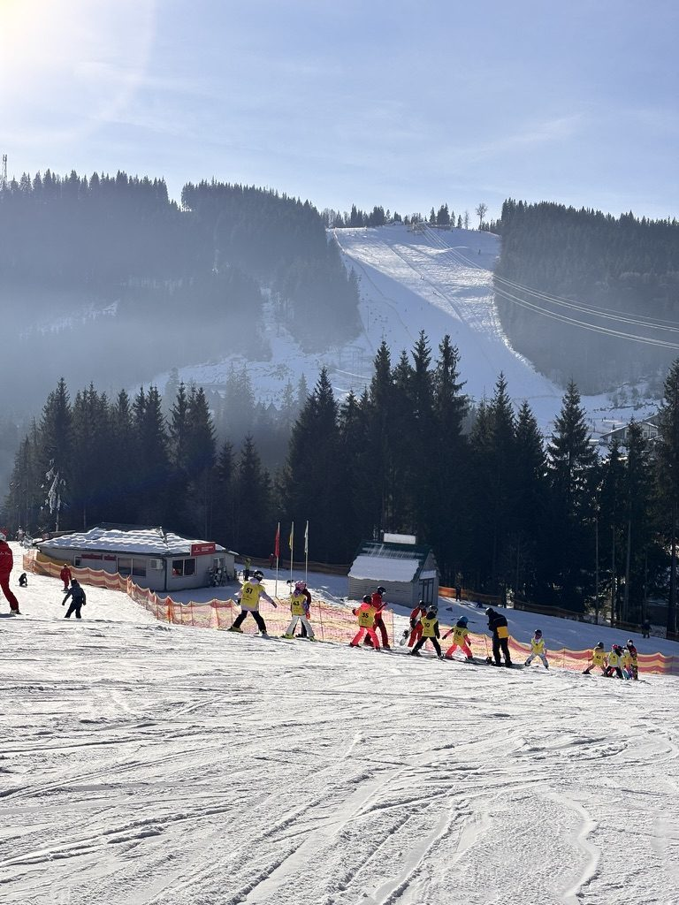

There are different ways to start a new year. Some people go to big cities, some people go to bed early, some people make elaborate plans that involve fireworks and crowds and end at 3am with wet shoes. I went to the mountains. I have done this enough times now to know it is the right choice for me every single time.
The ski camp was in the Romanian mountains — a group of us, a shared chalet, slopes that were ours in the morning before the day visitors arrived, and the understanding that the best conversations happen when everyone is tired from the cold and there is nowhere else to be.
The slope in the morning
The first run of the day on an empty slope is one of the better things available to a person. The snow is undisturbed, the air is cold and has a specific clarity that you only get at altitude in winter, and there is no one in front of you. You point downhill and everything else — the year that just ended, the one that's beginning — recedes into the sound of edges on snow.

Morning slopes. No one here yet. This is the good part.

The group getting to work. Everyone at a different skill level. Everyone having the best time.
People, mostly
What ski camps are actually about, I've decided, is people. The sport is the frame. The cold is the glue. Something about shared discomfort — falling, cold hands, that specific burn in your thighs after a long run — creates a speed of connection that takes much longer to reach in normal circumstances. By day two, people you met forty-eight hours ago feel like people you've known for years.

This group. Day two. Already feeling like people I've always known.
There are the usual characters at every ski camp: the one who came to actually improve and spends the mornings with an instructor, the one who skis well and helps everyone who doesn't, the one who mostly came for the après-ski and participates enthusiastically in both. I have been most of these at different points. This trip I was mostly the one trying to improve and occasionally succeeding.

Found a ski buddy with the same goal: actually learn something this time.
New Year's Eve on the mountain
New Year's Eve at a ski resort has its own rhythm. Dinner that gets louder and longer than planned. The countdown happening somewhere between the main course and midnight. And then midnight itself — outside, in the cold, the sky going up forever above the snow, and the strange feeling that this is exactly where you should be for this particular transition.

Midnight at altitude. The sky was extraordinary. The cold didn't matter at all.
The last day
The last day of a ski trip always has a particular quality. You ski more carefully because you know the slopes now, and also because you don't want it to end. You look at the mountain properly for the first time — you've been staring at your feet for days — and notice the actual scale of it. The pine trees. The other peaks. The way the light hits everything at this altitude differently than it does anywhere else.

Last run. Finally looking up instead of down. The mountains don't get smaller just because you've been looking at your skis.
I drove back down the mountain with the particular feeling of someone who has given the first days of the year something real to remember. The slopes, the cold, the people, the midnight outside in the snow. A good way to start. A good way to mean it when you say you're going to make this one count.
Skiing over New Year? World Nomads covers it.
Considering travel insurance for your trip? World Nomads offers coverage for more than 150 adventure activities — including skiing — as well as emergency medical, lost luggage, trip cancellation and more.
Get a Quote from World NomadsThis is an affiliate link — if you book through it, I may earn a small commission at no extra cost to you.